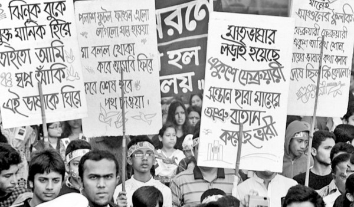
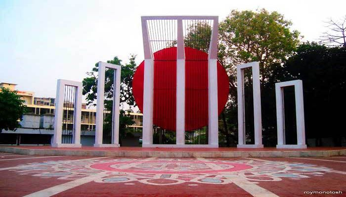
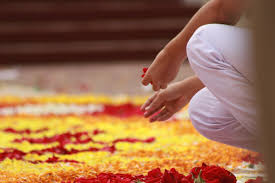
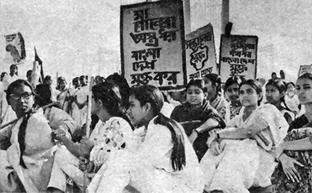
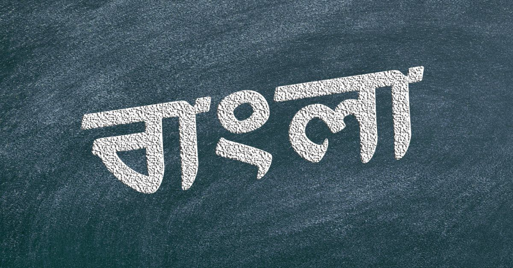
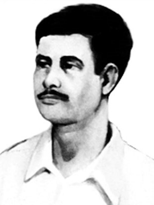

History of International Mother Language Day
The history of International Mother Language Day dates back to the Bengali Language Movement of 1952 in present-day Bangladesh (formerly East Pakistan). After the partition of India in 1947, Pakistan was formed with two regions—West Pakistan and East Pakistan (now Bangladesh). The government of Pakistan attempted to impose Urdu as the only state language, neglecting the fact that the majority of the population in East Pakistan spoke Bengali.
The Language Movement & Martyrs
On 21st February 1952, students from Dhaka University, Jagannath College, and Dhaka Medical College organized a protest demanding the recognition of Bengali as one of the state languages. The protest turned violent when police opened fire, killing students including Rafiq, Salam, Barkat, Jabbar, and Shafiur.
Recognition of Bengali Language
Due to continuous pressure and movements, in 1956, the Pakistan government declared Bengali as one of the official languages. However, the movement later became a crucial factor leading to the Bangladesh Liberation War in 1971, ultimately resulting in the independence of Bangladesh.
UNESCO’s Recognition
To honor this historical struggle, UNESCO declared 21st February as International Mother Language Day on 17th November 1999. Since 2000, this day has been observed worldwide to promote linguistic diversity and cultural identity.

Global Observance
Today, International Mother Language Day is celebrated in over 190 countries* emphasizing the importance of preserving languages and linguistic rights. People across the world pay tribute to language martyrs and raise awareness about the protection of indigenous languages.
Conclusion
Language is a vital part of cultural identity, and the recognition of 'International Mother Language Day' reminds the world about the importance of linguistic diversity. The sacrifice of the language martyrs in 1952 not only gave Bangladesh its linguistic freedom but also contributed to the preservation of many other languages worldwide.
1952
The Bengali Language Movement begins.
1956
Bengali is recognized as one of the official languages of East Pakistan.
1971
Bangladesh gains independence.

1999
UNESCO declares 21st February as International Mother Language Day.
Martyrs in the Language Movement.
Rafiq Uddin Ahmed
Rafiq Uddin Ahmed (1926-1952): Rafiq Uddin Ahmed, the eldest among five sons of Abdul Latif Miyan and Rafiza Khatun, was born on 30 October, 1926 at village Paril in Singair upazila of Manikganj district. From his childhood, Rafiq was distinguished as an encouraging, honest and patriotic social worker with passion for music and theatre. He staged and acted in various plays in the neighbouring villages. Rafiq passed matriculation from Baira School in 1949. While a student of Intermediate at Devendra College in Manikganj he discontinued his studies and moved to Dhaka. There he worked in his father's commercial printing business. In the meantime, he developed love relationship with his cousin Rahela Khanom Panu. Being informed, their parents organized their wedding. Accompanied by his nephew, Rafiq went to Dhaka for shopping for his forthcoming wedding. However, on 21 February 1952, the students of Dhaka University, Dhaka Medical College and other schools and colleges organized a procession
in support of their demand for making Bangla one of the State Languages of Pakistan. Many mass people also joined the procession. Rafiq was one of them. On that day, although, he was scheduled to return home with his wedding shopping, he joined the protest rally, defying official ban on assemble of people imposed under Section 144, due to his love for Bangla language. The police opened fire on the demonstration in the premises of Dhaka Medical College Hostel. Rafiq was shot in the head and died at the spot. He is probably the first martyr of the language movement. His dead body was later dumped by the Pakistani commandos (who stole the dead bodies of language martyrs from Dhaka Medical college morgue) in the Azimpur grave yard. His grave could not be identified later. His love for his mother tongue surpassed his lifelong passion for his beloved Panu to whom he never returned as a groom.
Abdus Salam
Abdus Salam was born on 27 November, 1925 in the village Laxmanpur (at present ‘Salam Nagar’) under Dagonbhuiyan upazila in Feni district. His father was Munshi Abdul Fazel Miah and mother was Daulater Nesa. His father joined in the Second World War and worked in Basra of Iraq. Salam spent his early life in Laxmanpur village. He started primary education in Krishnarampur Primary School. Upon completion of primary level, he got admitted into Matubhuiyan Kalimullah Minor School (Matubhuiyan High School). He studied from grade six to eight in this school. Later he got admission in Dagonbhuiyan Ataturk High School. But he could not continue his study after grade ten because of financial scarcity. Getting determined to relieve his family out of poverty Salam went to Kolkata where he got shelter of his cousin’s husband Abdul Qader, who used to work in Kolkata port. Abdul Qader managed a job for Salam in the port establishments. In 1947, he moved to Dhaka and got a clerical job as a record keeper in the department of industries. As a member of the government ministerial staff, Salam got
accommodation in Palasi Barrack at Azimpur. On 21 February 1952, Abdus Salam took part in the demonstration where, police fired brutally. Salam was shot and seriously injured. He was admitted to Dhaka Medical College and received treatment for about one and a half month. He passed away on 7 April, 1952. Salam was buried in Azimpur graveyard.
Abul Barkat
Abul Barkat, nicknamed Abai, was born on 13 June (some say 16 June), 1927 at village Babla in Bharatpur thana of Murshidabad district. His father was Shamsuzzoha and mother Hasina Bibi. Barkat had his early education at Babla Primary School. He passed Matriculation examination from Talibpur High School in 1945 and Intermediate examination from Bahrampur Krishnanath College in 1947. After the partition of India he came to Dhaka in 1948. He obtained BA (Hon.) degree in Political Science from Dhaka University in 1951 and got himself admitted into MA final year. In 1952, Abul Barkat was in the procession that students mobilized on the premises of the Dhaka Medical College hostel on 21 February. When the police fired on the gathering, Barkat was seriously injured. He was immediately carried to the emergency ward of the Dhaka Medical College Hospital where he died at about 8 P.M. He was laid to rest in Azimpur graveyard.
Abdul Jabbar
Abdul Jabbar (1919-1952): Abdul Jabbar was born at village Panchua in Gafargaon thana of Mymensingh district on 26 Aswin 1326 BS (1919). He was the son of Hasan Ali and Safatun Nesa. Although he received his primary education in the local educational institution called pathsala (Dhopaghat Krishibazar Primary School), he failed to continue his education owing to poverty. Besides, he had to help his father with agriculture. But Jabbar was not satisfied and he left home to seek his fortune. He went to Narayanganj and met an Englishman who helped him to get a job in Burma (currently Myanmar). He learned English language there. He returned home after twelve years of service in Burma. After returning from Myanmar, Jabbar organized a village defense group, to support the language movement, with boys from the neighborhood and led the group as its commander. In 1949, he married Amina Khatun, sister of one of his friends and settled down. One and a half year after the marriage, Amina had a baby boy, who was named Nurul Islam Badol. A night before the historical incident of February 21, Jabbar came to Dhaka to get his
.jpg)